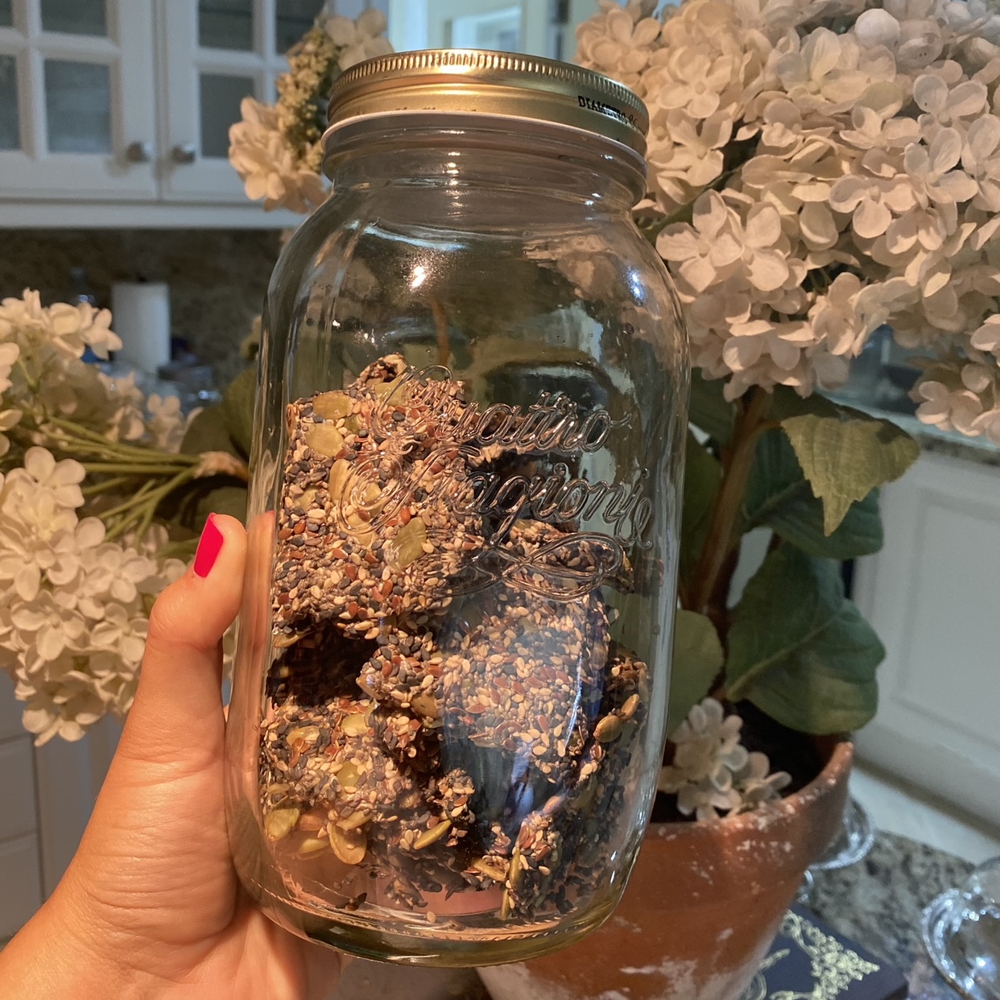
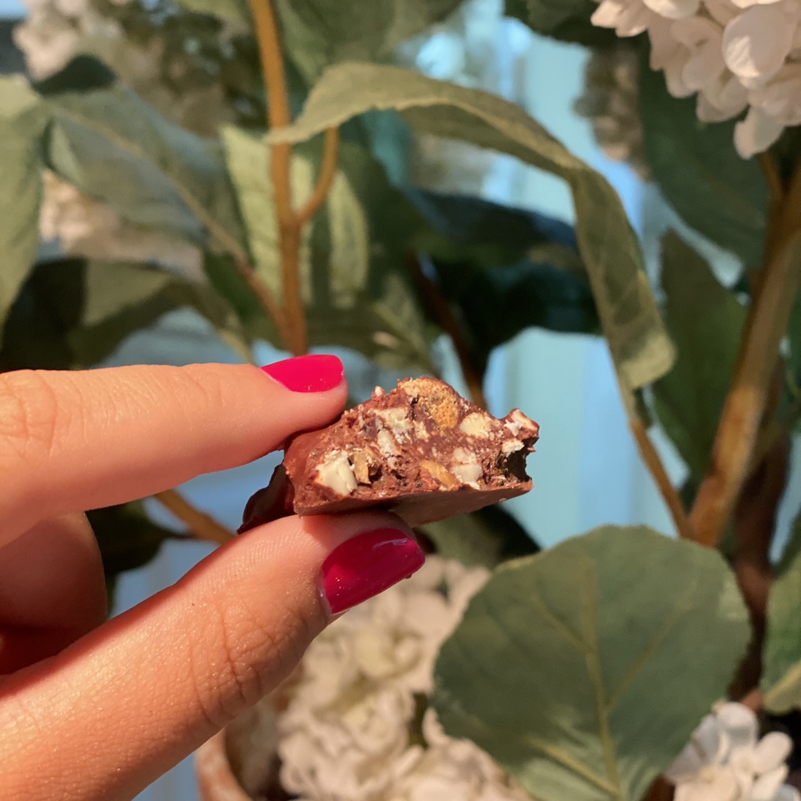
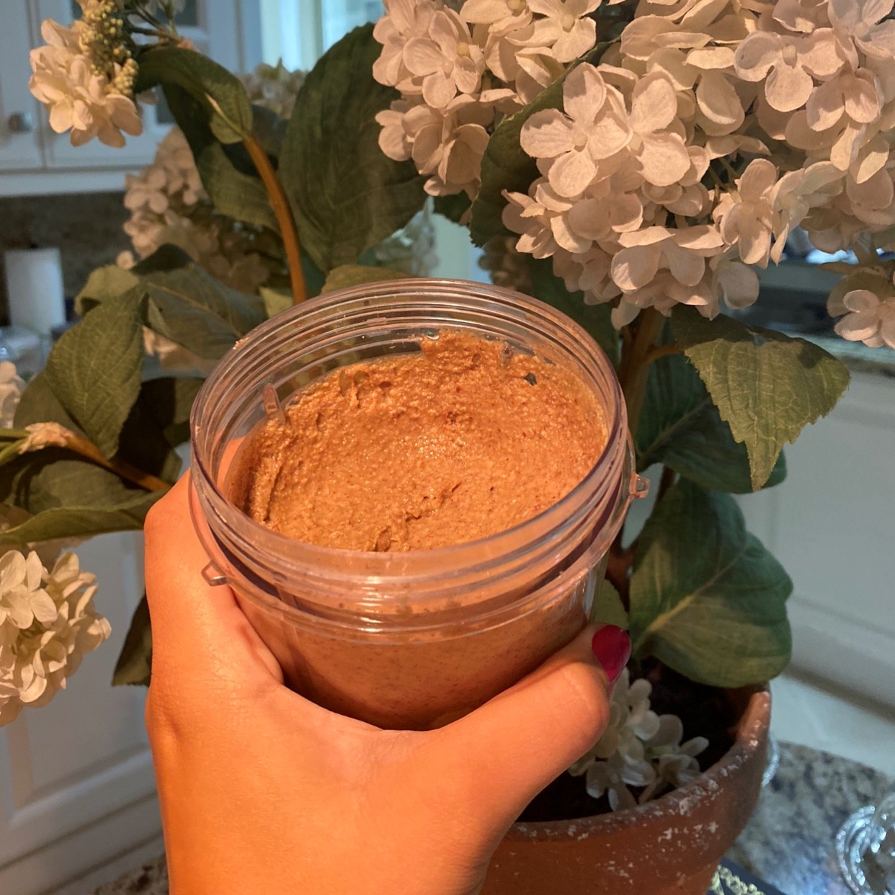
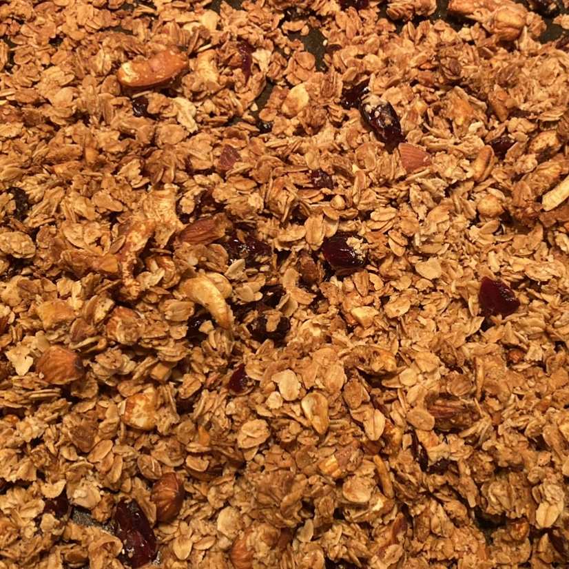
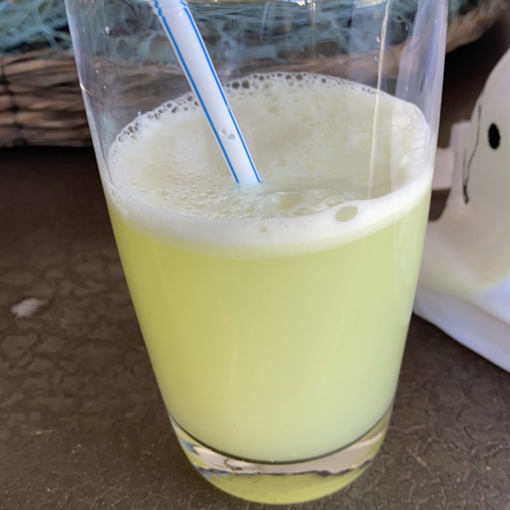
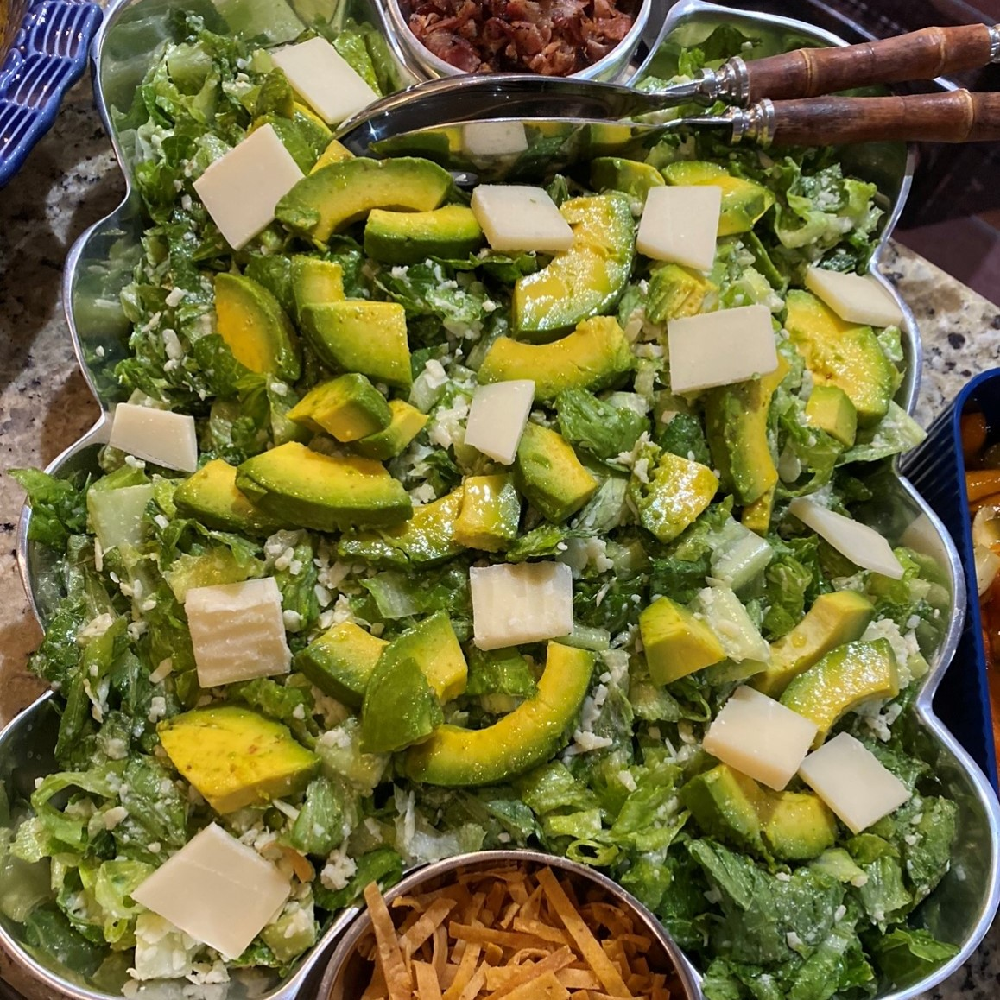
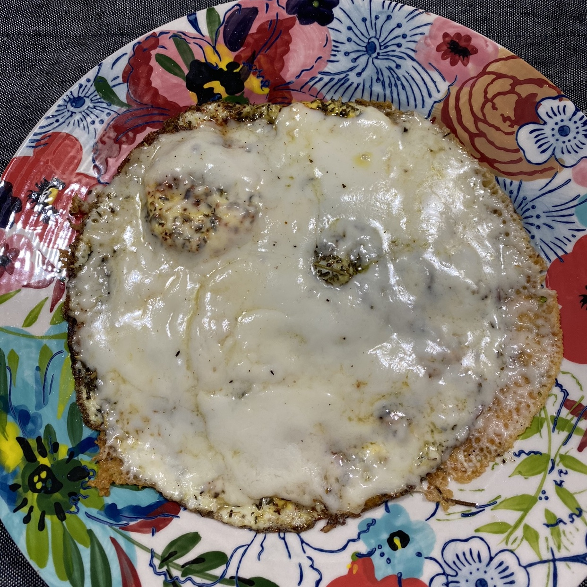

How We Eat on a Daily Basis
-
Every person has their own personal theories on what is a balanced
diet, so we are not saying this is THE best way to eat, it is just
the one that has had better results and that we have researched the
most throughout our journey. We have come to the conclusion that
carbohydrates should not be the main source of calories on every day
meals because the human body has no physiological need for them, so
we rely on a process called “carb cycling” in which we intake
carbohydrates every 3-4 days on our meal plans and only during
dinner. We also believe in the power of food combining, so whenever
we eat carbohydrates we only combine it with an animal protein
source.
-
Our meal plans consist of a very high protein intake, a very high
vegetable intake, a moderate fat intake, and a minimal carbohydrate
intake
-
Our typical breakfast looks like (IMAGE) Protein and Nut breakfast
-
Our typical lunch plate looks like (IMAGE) Protein, Avocado, and
Vegetables
-
Our typical dinner plate looks like (IMAGE) Protein, Avocado, and
Vegetables
-
However, on carb days it may look like this (IMAGE) Protein and
Rice
-
We don’t snack whatsoever
-
Unlimited coffee or tea
-
3-4 liters of water a day
-
Every morning we drink lemon water on an empty stomach.
-
We serve our plate once, and that it is!
-
A little piece of dark chocolate (70% or more) after lunch and
dinner
-
A glass of wine with dinner is sometimes craved, so we switch it out
with the chocolate for that meal
What You Will Need to Cook
- Measuring Cups
- Measuring Tablespooons and Teaspoons
- Mixing Bowls
- Microwavable Bowls
- Oven
- Food Processor
- Parchment Paper
- Trays (for oven)
- Knifes
- Spatulas
- Blender
Recipes
Seed (and only seed) Crackers

Ingredients
- 1/3 Cup Chia Seeds
- 3/4 Cups of Water
- 2/3 Cups Pumpkin Seeds
- 1/3 Cup Sesame Seeds (Black)
- 1/4 Cup Sesame Seeds (White)
- 1/4 Cup Flax Seeds OR Flax Meal
- Salt and Pepper to taste
Preparation
-
Preheat the oven to 325°F (165°C)
-
In a medium bowl, add the chia seeds and the water. Mix them well
and let sit for about 5 minutes. A gelatinous texture should be
reached
-
In another large bowl, add the pumpkin seeds, sesame seeds (black
and white), flax seeds, salt and pepper and mix them well
-
Transfer the chia seed gelatin mixture into the large bowl and mix
all ingredients well
-
Then, transfer the mixture onto a parchment paper-lined baking
sheet with a spatula and spread it into a thin even layer
-
Bake them for 30 minutes and remove them from the oven
-
Cut into the desired shape of your crackers (squared recommended)
and carefully flip each cracker
-
After flipping, bake for an additional 25 minutes
-
Remove from the oven and allow the crackers to cool for around 10
minutes
Dark Chocolate Almond Clusters

Ingredients
- 1 1/4 Cups Sliced/Crushed Almonds
- 1/3 Cup Almond Butter
- 1 Tablespoon of Coconut Oil
-
1/2 Cup Sugar-Free Chocolate Chips (Could also be dark chocolate
bar chopped in small pieces)
- 1 Tablespoon Chia Seeds
Preparation
-
Cover a large plate or board with parchment paper and place it in
the freezer while you prepare the batter
-
In a bowl (microwave save) add the almond butter, coconut oil, and
sugar-free chocolate chips.
-
Microwave the ingredients. However, every 30 seconds stir the mix
to avoid the almond butter or chocolate from burning. The mixture
should be fully combined and melted.
-
If you don’t have access to a microwave, place all the ingredients
in a small saucepan under medium heat and stir at all times until
the chocolate melts and the ingredients are fully combined
-
Transfer the sliced almonds and chia seeds into the mixture making
sure that the almonds and the seeds are fully covered with the
mixture
-
Remove the place from the freezer
-
Spoon the batter with the size of the cookie desired and place it
on the cold plate (over the parchment paper to avoid sticking).
Since the plate is cold, the cookie should not expand too much and
the bottom part should set pretty fast on the plate. Leave some
space between each cookie as a preventative measure. Repeat this
process until there is no more batter left.
-
Place the plate with the cookies in the freezer for about 10
minutes or when you see that the chocolate has set and is firm
-
Store the cookies in an air tight container in the fridge so that
they are crunchy
Almond Butter (Just Almonds)

Ingredients
- 1 Large Bag Raw Almonds (around 5 cups)
Preparation
- Preheat the oven to 350°F (177°C)
-
Place the almonds on a large tray, and once the oven is hot, place
them in the oven for 15-20 minutes or until they have turned
golden
-
Transfer the almonds carefully into a food processor and start
blending on high speed.
-
Stop occasionally to clean the borders of the processor
-
Nuts take time to release their own oils, so pay attention to when
the mixture starts to blend and become butter.
-
Once the desired consistency is achieved, transfer your butter
into a container with lid and don’t cover until the mixture is
cooled
-
Store in the fridge
Peanut Butter (Just Peanuts)

Ingredients
- 1 Large Bag Raw Unsalted Peanuts (about 5 cups)
Preparation
- Preheat the oven to 350°F (177°C)
-
Place the peanuts on a large tray, and once the oven is hot, place
them in the oven for 15-20 minutes or until they have turned
golden
-
Transfer the peanuts carefully into a food processor and start
blending on high speed.
-
Stop occasionally to clean the borders of the processor
-
Nuts take time to release their own oils, so pay attention to when
the mixture starts to blend and become butter.
-
Once the desired consistency is achieved, transfer your butter
into a container with lid and don’t cover until the mixture is
cooled
-
Store in the fridge
Home Made Granola

Ingredients
- 4 Cups Rolled Oats
- 1 Cup Almonds
- 1/2 Cup Pumpkin Seeds
- 1 Teaspoon Sea Salt
- 1 Teaspoon Powdered Cinnamon
- 1/2 Cup Coconut Oil
- 1/2 Cup Maple Syrup
- 1 Teaspoon Vanilla Extract
- 1/2 Cup Cranberries (Optional)
Preparation
-
Preheat the oven to 350°F (177°C)
-
Prepare a baking tray with parchment paper and set aside
-
In a medium bowl mix the rolled oats, almonds, pumpkin seeds,
cranberries, salt, and cinnamon
-
In another bowl combine well the coconut oil, honey, and vanilla
-
Slowly transfer the dry ingredients from the first bowl to the
second bowl and mix until all ingredients are covered with the
honey, coconut oil, and vanilla mixture
-
Transfer the mixture into the tray and spread with a spatula
-
Bake for about 20 minutes until the mixture is golden
-
Let cool completely
Lemon Water

Ingredients
- 1 Lemon
- 8-10 oz. Water
Preparation
-
Wash your lemon
-
Cut out the corner of the lemon with a sharp knife, and slice it
in half
-
Place the entire lemon (keep out the corners you cut) on the
blender with the water
-
Blend until smooth
-
With a strainer, transfer the lemon water into a glass
KETO Cesar Dressing

Ingredients
- 1 Greek Yogurt
- 1 Cup Shredded Parmesan Cheese
- 1 Tablespoon Cappers
- Juice of 2 Lemons
- Salt and Pepper to taste
- Water (optional for consistency)
Preparation
-
Place all ingredients in a blender (or Nutribullet)
-
let blend for a while until all ingredients have completely mixed
together
-
If too thick, add drops of water and continue to blend until you
reach desired consistency
-
Store in a container with lid
Our go-to Eggs

Ingredients
- 2 Organic Eggs
-
Turkey Breast (We use Boar's Head Honey Roasted Turkey Breast)
- 1/4 Cup Grated Parmesan Cheese
- Salt, Pepper, and Herbs to taste for seasoning
Preparation
-
Place 1 or 2 slices of turkey breast into a medium size skillet on
medium heat. Let it get a littler warm but not completely golden
-
Crack the 2 eggs on top of the breast (like if you were to do
fried eggs)
-
Sprinkle the salt, pepper, and herbs to taste on top of the eggs
-
Cover the skillet completely
-
Once the egg yolk has cooked, sprinkle the parmesan cheese and
cover once again
-
Let cook until desired and serve
Pistachio Pesto

Ingredients
- 2 Cups Shelled Pistachios (Preferably roasted and salted)
- 1 1/2 Cup Fresh Basil Leaves
- 1/3 Cup Shredded Parmesan Cheese
- Juice of 1 Lemon
- 1 Teaspoon Red Pepper Flakes (optional)
-
Approximately 2/3 Cups of Olive Oil (Could add more or less to
achieve desired consistency)
Preparation
-
In the food processor, process the pistachios, basil, cheese,
lemon, and red pepper flakes until you achieve a paste-like
consistency
-
Slowly drizzle the olive oil into the mixture until it comes
together
-
Store in an air tight container